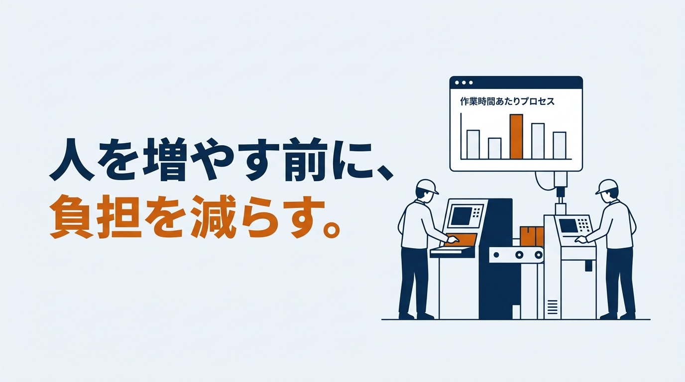
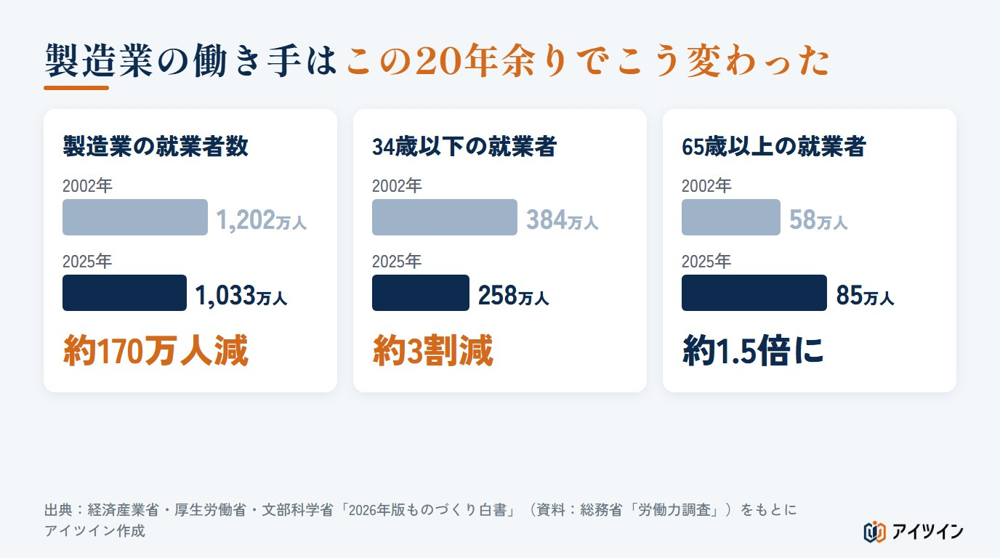
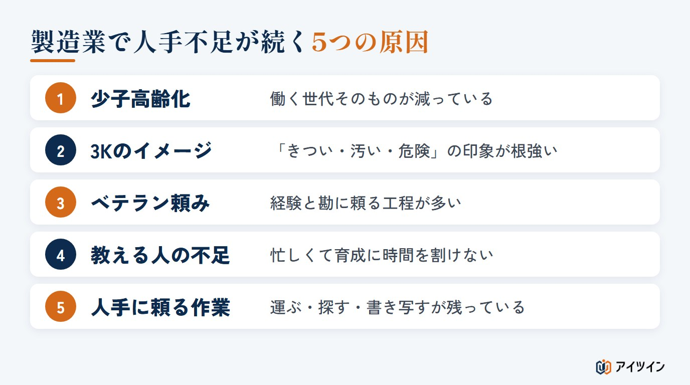
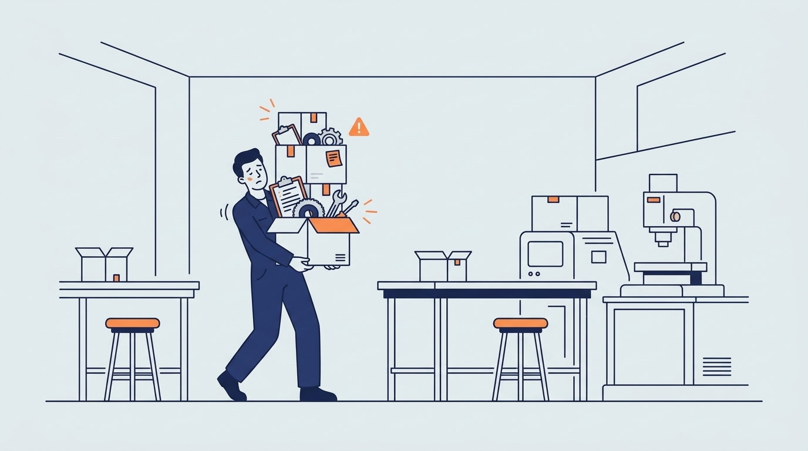
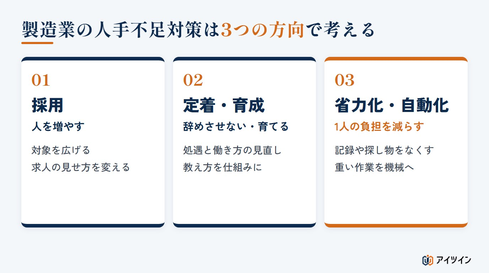
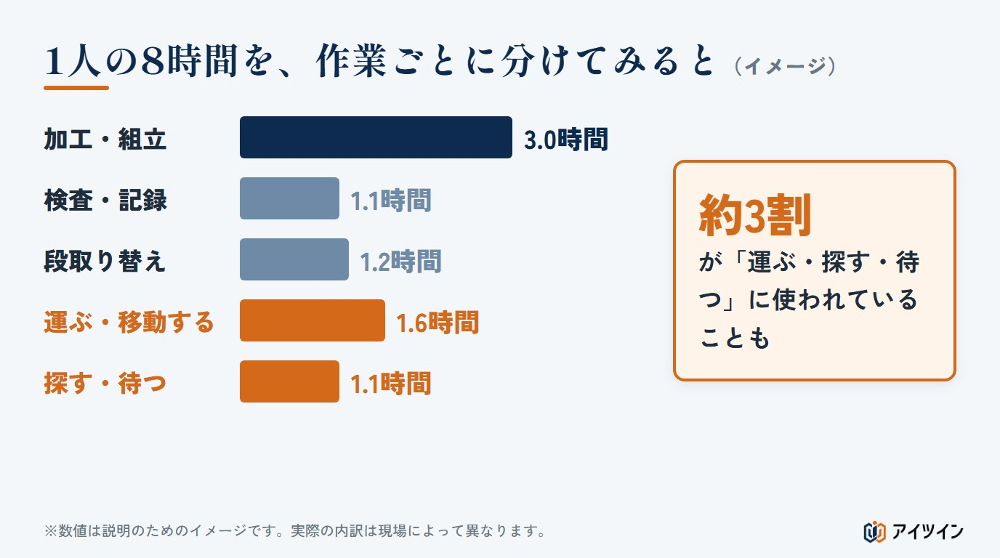
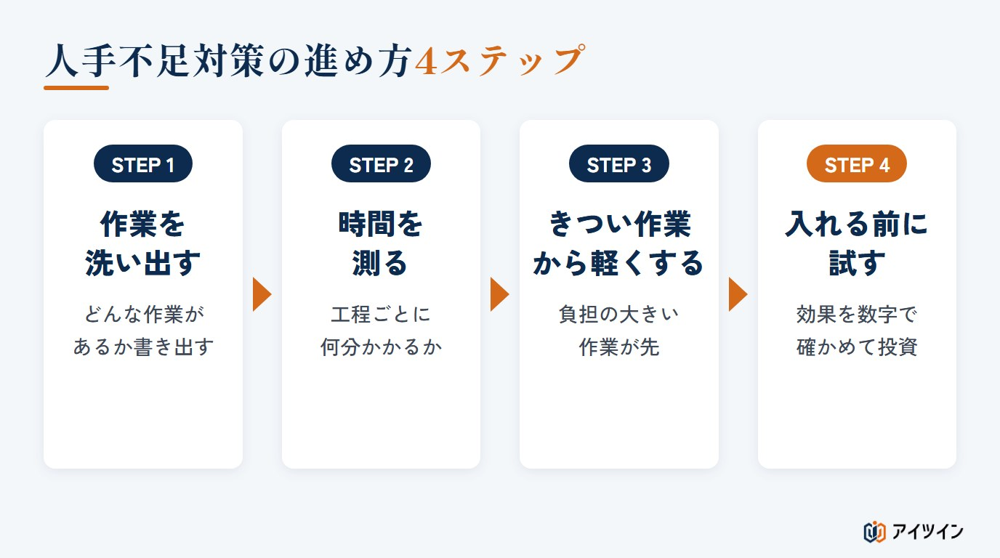

「募集をかけても、面接まで進む人がいない」「ベテランが辞めたら、この工程を回せる人がいない」。製造業の人手不足は、多くの中小企業にとって、毎日の現場で向き合う問題になっています。
本記事では、最新の公的データをもとに製造業の人手不足の現状を整理し、その原因と現場への影響、そして企業が取り組むべき人手不足対策を解説します。後半では、採用や設備投資の前に「どの工程で、どれだけ手が足りていないのか」を確かめる考え方もご紹介します。
この記事でわかること
- 製造業の人手不足の現状（2026年版ものづくり白書のデータ）
- 人手不足が続く5つの原因と、現場に与える4つの影響
- 採用・定着・省力化の3つの対策と、失敗しない進め方
製造業の人手不足の現状【2026年最新データ】
製造業の人手不足は、感覚だけの話ではありません。経済産業省・厚生労働省・文部科学省がまとめた「2026年版ものづくり白書」のデータから、現状を3つの数字で確認します。
製造業の就業者数は、2002年から約170万人減少
製造業で働く人の数は、2002年の1,202万人から、2025年には1,033万人まで減りました。この20年余りで、およそ170万人の働き手が製造業からいなくなった計算です。
注目したいのは、同じ期間に日本全体で働く人は6,330万人から6,828万人へと増えている点です。製造業以外で働く人に限ると、約5,130万人から約5,800万人へと増えています。日本全体で働く人が減ったのではなく、製造業に人が集まりにくくなっていることが、数字からも読み取れます。
34歳以下は約3割減、65歳以上は約1.5倍に
年齢別に見ると、変化はさらにはっきりします。製造業で働く34歳以下の若い世代は、2002年の384万人から2025年には258万人へと、約3割減りました。一方で、65歳以上の人は58万人から85万人へと、約1.5倍に増えています。
ここ数年は、34歳以下はほぼ横ばい、65歳以上はわずかに減る動きも見られますが、若手が減り、ベテランが現場を支える構図はすでに定着しています。今の主力世代が引退の時期を迎えたとき、その仕事を誰が引き継ぐのか。これが多くの工場に共通する不安です。

中小製造業の「人が足りない」感覚は、コロナ前の水準に
中小企業に従業員が足りているかを尋ねた調査では、製造業は2020年に一時「過剰」に転じたものの、その後は再び「不足」が上回っています。2025年の数値はマイナス17.9で、新型コロナの感染拡大前とほぼ同じ水準の人手不足感に戻りました。景気の波で一時的に和らぐことはあっても、根本的には解消していないということです。
この章のまとめ
- 製造業の就業者は、2002年から約170万人減った
- 34歳以下は約3割減、65歳以上は約1.5倍に増えた
- 中小製造業の人手不足感は、コロナ前の水準に戻っている
製造業で人手不足が続く5つの原因

製造業の人手不足には、社会全体の変化による原因と、現場の仕事の進め方による原因があります。ここでは代表的な5つを取り上げます。
原因1：少子高齢化で、働く世代そのものが減っている
日本では、15〜64歳のいわゆる働く世代が長く減り続けています。どの業界も同じ人材を取り合うことになり、給与や働き方で有利な業界に人が流れやすくなります。これは一社の努力だけでは変えられない、前提として受け入れるしかない変化です。特に地方の中小企業では、若い世代が都市部へ移ることも重なり、同じ地域で人を探すこと自体が年々難しくなっています。
原因2：「きつい・汚い・危険」のイメージが根強い
製造業には、今も「3K」の印象が残っています。実際には空調や安全対策が進んだ工場も多いのですが、働いたことがない人にはその変化が伝わっていません。求職者が仕事を選ぶ段階で、最初から候補に入らないことが、応募が集まらない一因になっています。
原因3：ベテランの経験と勘に頼った工程が多い
「この音がしたら刃物の替えどき」「この色になったら火を止める」。長年の経験で身についた判断は、言葉やマニュアルに残りにくいものです。特定の人にしかできない工程が多いほど、その人が抜けたときの穴は大きくなります。人数は足りているのに、特定の工程だけ回らない。これも人手不足の一つの形です。
原因4：教える人が足りず、若手が育ちにくい
2026年版ものづくり白書では、製造業で人材育成に問題を抱える事業所のうち、62.8％、つまり6割以上が「指導する人材が不足している」と答えています。ベテランは目の前の生産で手一杯になり、教える時間がとれません。その結果、若手が育つ前に辞めてしまい、また人が足りなくなるという悪循環が生まれます。
原因5：人の手に頼る作業・ムダな作業が残っている
部品や材料を運ぶ、工具を探す、紙の記録を書き写す、前の工程を待つ。こうした作業は、製品の価値を直接生むわけではありませんが、1日の中で多くの時間を占めていることがあります。本来の仕事以外に時間を取られているため、「人が足りない」と感じやすくなっているケースも少なくありません。
この章のまとめ
- 少子高齢化と3Kのイメージで、そもそも人が集まりにくい
- ベテラン頼みの工程と、教える人の不足で、人が育ちにくい
- 運ぶ・探す・待つといった作業が、限られた人手の時間を奪っている
人手不足が製造現場に与える4つの影響
人手不足は、ただ「忙しい」だけでは終わりません。放っておくと、次のような影響が連鎖的に広がります。

影響1：残った人に負担が集中し、離職が連鎖する
1人が辞めると、その分の仕事は残った人が分け合います。残業や休日出勤が増え、疲れがたまった人がまた辞めていく。人手不足がさらに人手不足を呼ぶのが、この問題のいちばん怖いところです。
影響2：納期遅れや品質のばらつきが起きやすくなる
慣れていない人が急な穴埋めに入ったり、確認の時間が削られたりすると、不良やミスが増えやすくなります。生産量を落とさざるを得ず、納期に間に合わない場面も出てきます。取引先からの信頼にも関わる問題です。
また、急ぎの穴埋めが続くと、本来は計画的に行うはずの設備の点検や改善の時間も後回しになりがちです。目の前の生産を回すことで精一杯になり、先を見た取り組みに手が回らなくなるのも、人手不足の見えにくい影響の一つです。
影響3：技術やノウハウが途切れる
ベテランが引退するまでに次の担い手が育っていなければ、その技術は会社から失われます。一度失われた技術を取り戻すには、長い時間と大きなコストがかかります。人手不足は、現在の生産だけでなく、会社の将来の力にも関わる問題です。
影響4：受注を断る・事業を縮小するリスクが高まる
注文はあるのに、作る人がいないために受けられない。こうした状態が続けば、売上の機会を逃し続けることになります。最悪の場合、事業の縮小や廃業を考えざるを得なくなる企業も出てきています。業績に問題がなくても、働き手や後継者が見つからないことが理由で事業を続けられなくなる。人手不足は、それほど経営の根幹に関わる問題になっています。
この章のまとめ
- 負担が集中して離職が連鎖し、人手不足がさらに進む
- 納期遅れ・品質のばらつきが、取引先の信頼に響く
- 技術の断絶や受注の見送りが、会社の将来を左右する
製造業の人手不足対策｜3つの方向性
製造業の人手不足対策は、大きく「採用」「定着・育成」「省力化・自動化」の3つの方向に分けられます。どれか一つではなく、自社の状況に合わせて組み合わせることが大切です。

対策1：採用の幅を広げる（人を増やす）
採用では、これまで対象にしてこなかった人たちにも目を向けることが第一歩です。女性やシニア、外国人、未経験の若手など、対象を広げれば応募の母数は増えます。あわせて、求人票に職場の写真や一日の流れを載せる、工場見学を受け入れるといった工夫で、3Kのイメージをやわらげることも効果的です。ただし、採用はどの業界も力を入れている分野で、人が集まるまでには時間がかかります。採用だけに頼らず、次の2つの対策と並行して進めるのが現実的です。
対策2：定着と育成に取り組む（辞めさせない・育てる）
せっかく採用しても、すぐに辞めてしまっては人手不足は解消しません。まずは給与や評価の仕組み、休みの取りやすさ、夜勤の負担など、働き続けやすい条件を見直すことが基本です。
育成では、「見て覚えろ」から「教え方を仕組みにする」への切り替えが鍵になります。作業手順を写真や動画でまとめる、教える担当と時間をあらかじめ決めておく、1人が複数の工程をこなせる多能工を計画的に育てる。こうした取り組みは、ベテランの負担を減らし、誰かが休んだときの穴埋めにも役立ちます。
働き方の面では、短い時間だけ働ける勤務帯を用意する、子育てや介護と両立しやすいシフトを組むといった工夫も効果があります。「フルタイムで毎日」以外の選択肢があるだけで、働ける人の幅は広がります。ベテランの再雇用も、技術を引き継ぐ時間を確保するうえで有効な方法です。
対策3：省力化・自動化で1人あたりの負担を減らす
3つ目は、今いる人の負担そのものを減らす方向です。紙の記録をデジタルに置き換える、設備の稼働状況を自動で集める、重い物の運搬や危険な作業を機械に任せる。人を増やさなくても、1人がこなせる仕事の量を増やせれば、人手不足は大きく和らぎます。
省力化というと大がかりなロボットを思い浮かべがちですが、身近なところから始められる取り組みも多くあります。
- 手書きの日報や点検表を、タブレットやスマートフォンでの入力に変える
- 設備の稼働・停止を自動で記録し、集計の手間をなくす
- 工具や部品の置き場所を決め、探す時間を減らす
- 重い物の持ち上げや運搬に、補助の道具や台車を使う
こうした小さな改善を積み重ねるだけでも、1日の中で本来の仕事に使える時間は確実に増えていきます。
なお、人の数を減らす「省人化」と、今いる人の負担を軽くする「省力化」は、似ているようで考え方が異なります。中小の製造現場では、まず省力化から取り組む方が効果を出しやすい傾向があります。詳しくは省人化ではなく省力化を解説したコラムもご覧ください。
国の補助金・助成金も活用する
人手不足対策には、国の支援制度を活用できる場合があります。たとえば、人手不足に悩む中小企業の省力化投資を支援する「中小企業省力化投資補助金」や、従業員に職業訓練を行った事業主に、訓練の費用や訓練期間中の賃金の一部を助成する厚生労働省の「人材開発支援助成金」などです。制度を使えるかどうかで、取り組める対策の幅は大きく変わります。要件や公募の時期は年度ごとに変わるため、検討を始めたら早めに公式の情報を確認しておきましょう。自社の工場のどこが省力化投資補助金の対象になりそうかは、補助金の対象を現場目線で解説したコラムで整理しています。
この章のまとめ
- 対策は「採用」「定着・育成」「省力化・自動化」の3方向
- 採用は時間がかかるため、ほかの2つと並行して進める
- 今いる人の負担を減らす省力化は、中小の現場ほど効果が出やすい
- 補助金・助成金を使えるかどうかも、早めに確認する
人手不足対策がうまくいかない理由は「足りない場所」が見えていないこと
ここまで紹介した対策は、どれも大切なものです。それでも「採用しても楽にならない」「設備を入れたのに効果が見えない」という声は少なくありません。その多くに共通するのは、どこに、どれだけ手が足りていないのかが、はっきりしないまま対策を選んでいることです。
「あと何人必要か」だけでは、打ち手が決まらない
「あと2人いれば回る」という感覚は、現場ではよく聞かれます。しかし、その2人にどの作業を任せるのかが決まっていなければ、採用しても期待した効果は出にくいものです。人数ではなく、「どの工程の、どの作業に、何分かかっているか」という単位で見ると、打ち手が具体的になります。
足りないのは「人」ではなく「特定の作業の時間」であることが多い
たとえば、1人の作業者の8時間を作業ごとに分けてみると、次の図のようになることがあります。

この例では、製品に直接手を加えている時間は3時間ほどで、約3割が「運ぶ・探す・待つ」に使われています。この部分を半分に減らせれば、1日あたり1時間以上、本来の仕事に使える時間が生まれます。人を1人増やすよりも早く、確実に効く場合もあります。
逆に、この内訳を知らないまま人を増やしても、新しく入った人も同じように運び、探し、待つことになります。まず時間の使われ方を知ることが、どの対策を選ぶにしても出発点になるのです。
ロボットや設備は「入れる前に」確かめる
自動化を考えるときに気をつけたいのが、設備を入れてから「思ったほど効果がなかった」と気づくことです。たとえば搬送作業をロボットで自動化する場合、費用のうちロボット本体は3割ほどで、残りは周辺の装置や安全対策、工事や設計が占めることもあります（詳しくは搬送作業の省人化の費用を解説したコラムをご覧ください）。
大きな投資だからこそ、導入の前に「本当にその工程が一番の困りごとなのか」「入れたら何分減るのか」を確かめておくことが、失敗しないための近道です。
この章のまとめ
- 対策がうまくいかない原因は、足りない場所が見えていないこと
- 人数ではなく「どの作業に何分かかっているか」で考える
- 設備やロボットは、入れる前に効果を確かめる
人手不足対策の進め方4ステップ
では、実際にどう進めればよいのでしょうか。大がかりな投資をする前に、次の4つのステップで取り組むのがおすすめです。

STEP1：現場の作業を洗い出す
まずは、現場にどんな作業があるのかを一つずつ書き出します。作業者本人にも話を聞き、「どの作業がきついか」「どの作業が敬遠されがちか」を確かめましょう。毎日くり返している作業ほど当たり前になり、本人も負担だと気づいていないことがあります。
STEP2：工程ごとの作業時間を測る
次に、洗い出した作業にそれぞれどれくらい時間がかかっているかを測ります。最初はストップウォッチと記録用紙でも十分です。数字にすることで、「なんとなく大変」が「ここに1日○分かかっている」に変わります。
STEP3：負担の大きい作業から軽くする
数字がそろったら、時間がかかっている作業や、体への負担が大きい作業から手をつけます。やりやすい作業から始めたくなりますが、誰もが避けたがる作業から改善した方が、現場の理解と協力を得やすくなります。道具や置き場所の工夫など、お金をかけずにできる改善も少なくありません。
STEP4：導入前に試し、効果を数字で確かめる
設備やシステムの導入を検討する段階では、いきなり本番の投資をせず、小さく試して効果を確かめます。導入前後で作業時間がどれだけ変わるかを数字で示せれば、社内の説明もしやすくなります。省力化の効果を数字で示すことは、前の章で触れた補助金などの制度を検討するうえでも役立ちます。
この章のまとめ
- 作業を洗い出し、時間を測って、困りごとを数字にする
- 負担の大きい作業から改善すると、現場の協力を得やすい
- 投資の前に小さく試し、効果を数字で確かめる
アイツインの人手不足対策の支援
アイツインは、中小製造業の人手不足対策を、現場に入り込んで一緒に進める伴走型で支援しています。ここまでご紹介した4つのステップを、エンジニアが現場で一緒に進めます。
課題の発見から始める短期プログラム
「どこから手をつければよいか分からない」という段階からご相談いただけます。まずは現場の作業を洗い出し、どこに時間と負担が集中しているかを整理する短期プログラムをご用意しています。エンジニアが実際に現場へうかがい、作業の様子を見て、作業者の方にもお話を聞きながら、困りごとを一つずつ言葉と数字にしていきます。本格的に進める場合も3か月単位で、成果を確かめながら続けるかどうかをご判断いただけます。
作業時間を見える化し、入れる前に試す
現場の作業時間や人の動きをデータにして、どこにムダや負担があるかを数字で示します。そのうえで、改善後の現場をデジタル上で再現し、設備を入れる前に効果を確かめることができます。「作る前に試せる」ので、大きな投資で失敗するリスクを抑えられます。導入前後の違いを数字で示せるため、社内での説明や、補助金を検討する際の資料づくりにも役立ちます。
ベテランの技を、次の世代へ残す
ベテランの作業や判断をデータとして記録し、若手が学べる形に残すお手伝いもしています。教える人が足りない現場でも、技術を途切れさせずに引き継ぐための仕組みづくりを支援します。
まとめ
本記事では、製造業の人手不足の現状と原因、現場への影響、そして取り組むべき対策を解説しました。
製造業の人手不足は、就業者の減少と高齢化を背景に、今後も続くと考えられます。対策は「採用」「定着・育成」「省力化・自動化」の3つの方向で考え、自社に合った形で組み合わせることが大切です。
そして、どの対策を選ぶにしても、最初に確かめておきたいのが「どの工程で、どれだけ手が足りていないのか」です。人数ではなく作業の時間で現場を見直すと、人を増やさなくても現場を回せる道が見えてきます。まずは現場の作業を洗い出すところから、始めてみてはいかがでしょうか。
参考
・経済産業省・厚生労働省・文部科学省「2026年版ものづくり白書 概要」（厚生労働省）